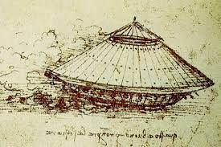

Leonardo Da Vinci
Leonardo Da Vinci
 Leonardo Da Vinci
Leonardo Da Vinci
|
BIOGRAFIA Nacido en Vinci, Italia, el 15 de abril de 1452, Leonardo da Vinci fue un polímata excepcional que destacó en diversas áreas del conocimiento, incluyendo la pintura, la escultura, la arquitectura, la ingeniería, la anatomía, la botánica, la cartografía y la música. Su formación estuvo marcada por el taller de Andrea Verrocchio en Florencia, donde adquirió habilidades en diversas técnicas artísticas y científicas. Carrera artística: Da Vinci es considerado uno de los artistas más importantes de todos los tiempos. Sus obras maestras, como "La Mona Lisa", "La última cena" y "El hombre de Vitruvio", son reconocidas por su belleza técnica, su profunda comprención de la anatomía humana y su uso magistral de la perspectiva y el sfumato. Leonardo da Vinci fue un prolífico inventor y científico. Sus diseños de máquinas voladoras, submarinos, tanques de guerra y mecanismos hidráulicos anticipan muchos inventos posteriores. Sus estudios de anatomía humana, realizados mediante disecciones, fueron pioneros en su época. Leonardo da Vinci falleció en Amboise, Francia, el 2 de mayo de 1519. Su legado es inigualable. Considerado un genio universal, su obra y pensamiento han inspirado a generaciones de artistas, científicos, inventores y pensadores. Su espíritu de curiosidad, creatividad e innovación continúa siendo un modelo a seguir en la búsqueda del conocimiento y la comprensión del mundo. |
| Creaciones | |||
|---|---|---|---|
| El tanque de guerra de Leonardo da Vinci, también conocido como carro blindado, es un diseño conceptual creado por el genio italiano a finales del siglo XV. Aunque nunca se construyó en su época, este ingenioso invento es considerado un precursor de los tanques modernos y un ejemplo de la mente innovadora de da Vinci. Diseño y características: De forma circular el tanque tenía una forma circular con una estructura de madera reforzada con placas de metal. Esta forma proporcionaba protección a los ocupantes y facilitaba la maniobrabilidad. Contaba con múltiples cañones equipado con numerosos cañones pequeños que podían disparar en todas direcciones, permitiendo a los soldados atacar desde cualquier ángulo; Con un ingenioso sistema de engranajes permitía rotar la torreta del tanque y apuntar los cañones con precisión. Impacto y legado: Si bien el tanque de da Vinci nunca se materializó en un campo de batalla, su diseño representa un salto importante en la historia de la tecnología militar. Las ideas de da Vinci para la protección blindada, la potencia de fuego multidireccional y la locomoción mecánica sentaron las bases para el desarrollo de tanques modernos siglos después. La importancia del tanque de da Vinci va más allá de su aplicación bélica. Este ingenioso invento refleja la capacidad de da Vinci para pensar fuera de lo común y desafiar las ideas establecidas de su época. |  | ||
| La Mona Lisa, también conocida como "La Gioconda", es una de las obras de arte más famosas e icónicas del mundo. Se trata de un óleo sobre tabla de álamo de 77 x 53 cm, pintado por el genio italiano Leonardo da Vinci entre 1503 y 1519. Actualmente se encuentra en exhibición en el Museo del Louvre de París, Francia. La Mona Lisa representa a Lisa Gherardini, esposa de un comerciante florentino. La modelo aparece sentada en una silla, con un paisaje montañoso de fondo. Su mirada es enigmática, con una leve sonrisa que ha intrigado a los espectadores durante siglos. La obra destaca por su uso del "sfumato", una técnica creada por da Vinci que difumina los contornos y crea una sensación de atmósfera y profundidad. Fama y misterio: La Mona Lisa ha sido objeto de numerosos estudios, análisis e interpretaciones. Su fama se ha visto amplificada por el robo que sufrió en 1911, cuando fue sustraída del Louvre y permaneció desaparecida durante dos años. Este hecho la convirtió en una obra aún más codiciada y misteriosa. Más allá de la Mona Lisa: Leonardo da Vinci fue un artista prolífico que dejó un legado inigualable en la historia del arte. Además de la Mona Lisa, creó otras obras maestras como "La última cena", "El hombre de Vitruvio" y "La dama del armiño". Su genio creativo abarcó diversos campos, desde la pintura y la escultura hasta la arquitectura, la ingeniería y la anatomía. |

|
||
| El tornillo aéreo un diseño conceptual que, aunque no llegó a surcar el aire en su época, se erige como un hito en la historia de la aeronáutica y un testimonio del ingenio visionario de Leonardo. El tornillo aéreo consistía en una estructura cónica de madera cubierta de tela, coronada por una ingeniosa hélice en espiral. La idea de Leonardo era simple pero audaz: al rotar la hélice con suficiente fuerza, se generaría una corriente de aire ascendente que elevaría el aparato, permitiendo al piloto, ubicado en la base, controlar la dirección del vuelo inclinando la estructura. Un desafío a su tiempo: La genialidad del diseño de Leonardo radicaba en su simplicidad y efectividad teórica. Sin embargo, la época no estaba preparada para tal avance. La tecnología disponible no permitía la construcción de un motor lo suficientemente potente para rotar la hélice con la fuerza requerida para generar la sustentación necesaria. A pesar de estas limitaciones, el tornillo aéreo representa un salto importante en la comprensión del vuelo y un paso crucial hacia el desarrollo de los helicópteros modernos. |

|
||
| La máquina voladora de Leonardo da Vinci: Inspirada en las aves, la máquina voladora de Leonardo da Vinci tiene una estructura de madera con alas batientes y una cola similar a la de un murciélago. Funcionamiento: El piloto, ubicado en el interior, batía las alas manualmente o con la ayuda de una catapulta para generar sustentación y propulsión. Limitaciones: La tecnología de la época no permitía un motor lo suficientemente potente para el vuelo sostenido. Importancia: Sentó las bases para el desarrollo de la aviación, inspirando a pioneros como Lilienthal y los hermanos Wright. Detalles: 1. Alas: Membrana de tela tensada sobre un marco de madera, con forma cóncava-convexa para generar sustentación. 2. Mecanismo de propulsión:** Manos del piloto o catapulta (en algunos bocetos). 3. Materiales: Madera y tela. Legado: Un ejemplo del genio creativo e innovador de Leonardo da Vinci, quien a través de la observación, la experimentación y la búsqueda del conocimiento, exploró las infinitas posibilidades del mundo. |

|
||